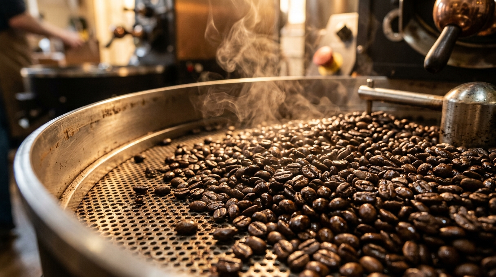
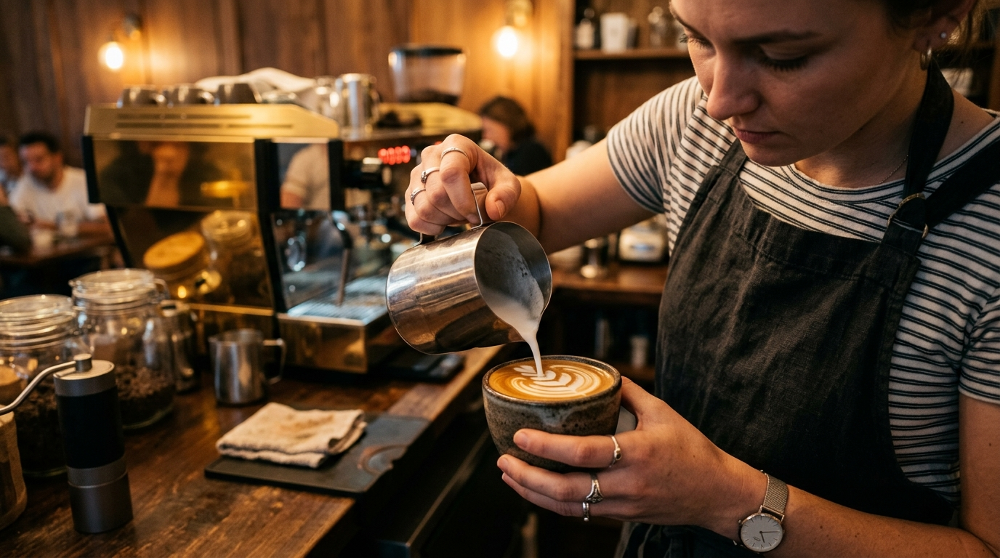
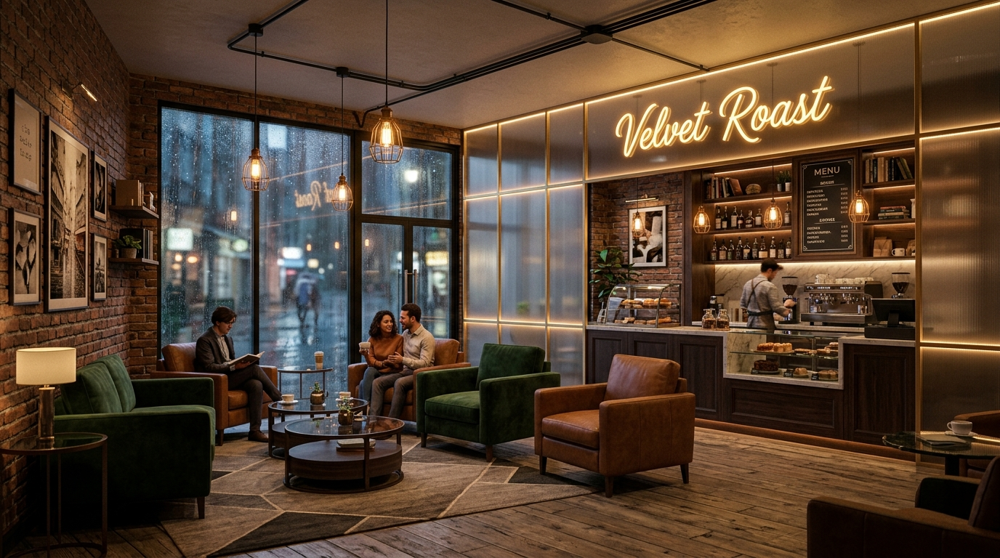

Crafting moments, slow-roasted with care.
Established in 2026, The Velvet Roast emerged from a simple dream: to create an oasis where the fast-paced modern world slows down, and coffee is treated not as a commodity, but as a fine craft.
We began with a single vintage micro-roaster and a handful of exceptional, responsibly sourced green coffee lots. Today, our philosophy remains unchanged. We source only specialty-grade, single-origin Arabica beans, maintaining close relationships with smallholder farmers across the equator to ensure ethical compensation and ecological sustainability.
Every morning, our master roasters examine humidity, temperature, and crack velocity, dialing in the perfect roast curve to unlock the unique terroir of each crop. When you sit in our sanctuary, you aren't just drinking coffee—you are experiencing a meticulous journey from cherry to cup.

What makes us Velvet
Every detail, from bean selection to the design of our tables, is guided by our fundamental values.
Specialty Quality
We source only green coffees scoring 85+ on the SCA scale. Every single lot is cupped, tested, and custom-profiled.
True Sustainability
Direct relationships with farmers ensure premium prices. Our shop operations utilize compostable products and renewable resources.
Precision Craft
Grinders are calibrated daily, weighing inputs and outputs down to the milligram. Brewing is where science and art meet.
Sanctuary Spaces
We design dark, warm, and comforting environments that act as community hubs, study spaces, and cozy retreats.
Sanctuary Walkthrough
A glimpse into our roasting rooms, cozy corners, and handcrafted brews.


Our Roasting & Barista Team
The passionate individuals working daily to bring you the finest coffee experience.
Aarav Sharma
Sourcing exceptional micro-lots globally and directing our sensory roasting profiles with 10+ years of roasting expertise.
Maya Patel
Champion barista and educator who ensures every milk texture is silky-smooth and pour quality meets the gold standard.
Vikram Mehta
Sensory judge and QC manager who cups every roast batch to guarantee consistency, complexity, and purity of flavors.